Creating a Network
- First identify the Devices section
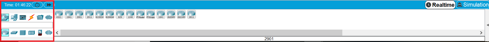
- Identify the Network Devices icon
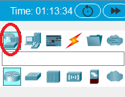
- Identify the Router icon (it should be preselected)
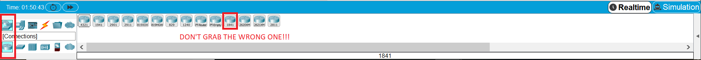
- Choose the 1841 router and drag it onto the workspace in the specified location
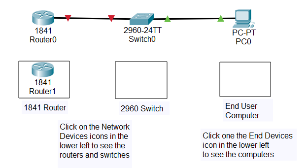
- Identify the Switch icon next to the router icon
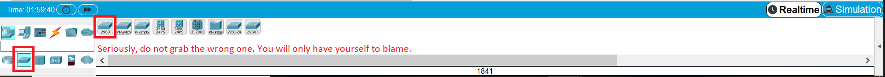
- Choose the 2960 switch and put it in the specified location
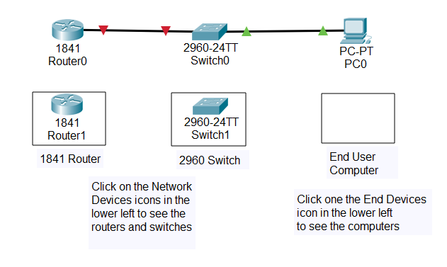
- Identify the End Devices and click on it
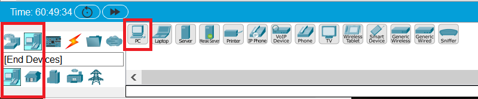
- Find the computer icon and bring it onto the workspace in the specified location
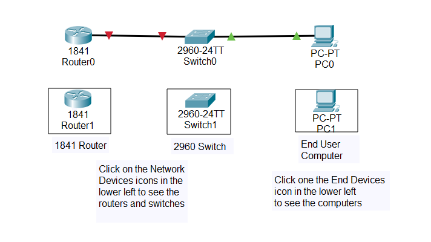
- Find the Connections icon and click on the ethernet straight thru (Copper Straight Through) connection (the dotted line is the crossover)
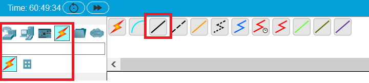
- After the straight thru has been selected, click on the 1841 router and choose port fa0/0
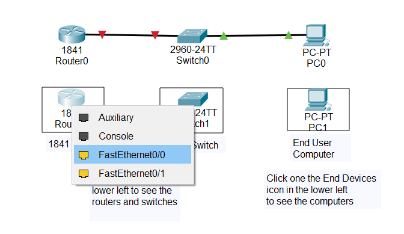
- After the router is "plugged in" click on the 2960 switch and choose fa0/24
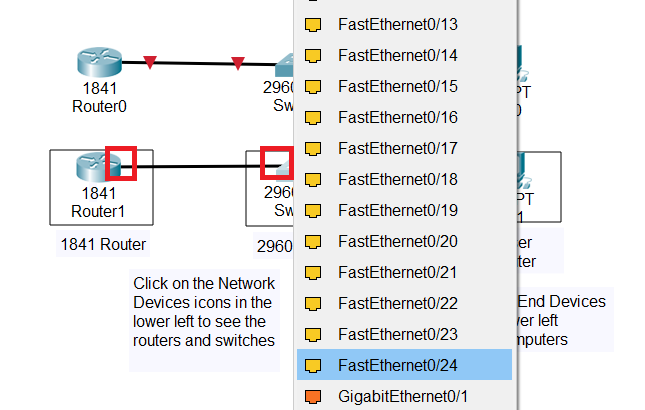
- You should now have a completed connection, but the link won't come up until we "no shut" the router port; we will configure the devices in the next lesson
- Repeat for the connection between the switch and the computer, plugging the straight thru into port fa0/1 on the switch and fa0 on the computer
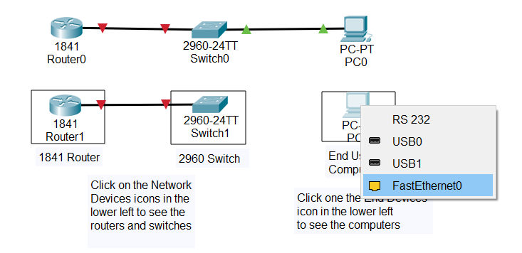
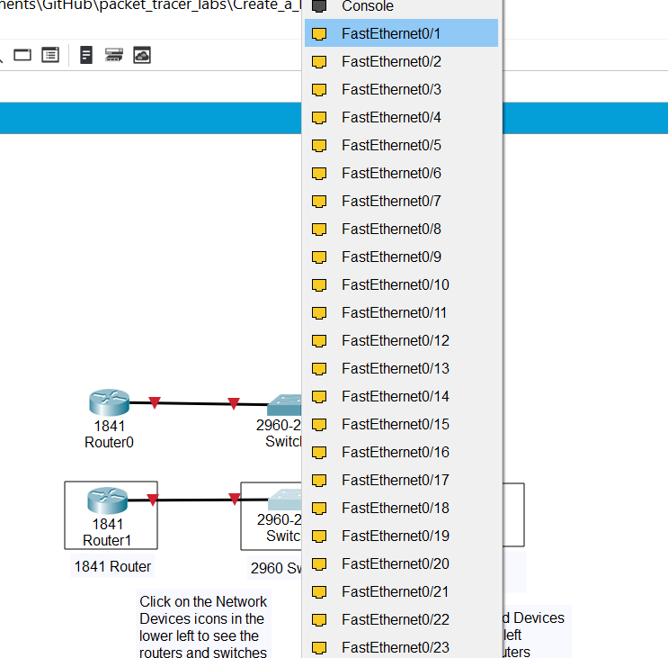
- This connection should come up with green on both ends within 30 seconds, if you don't feel like waiting you can use the fast forward button on the bottom left part of the screen
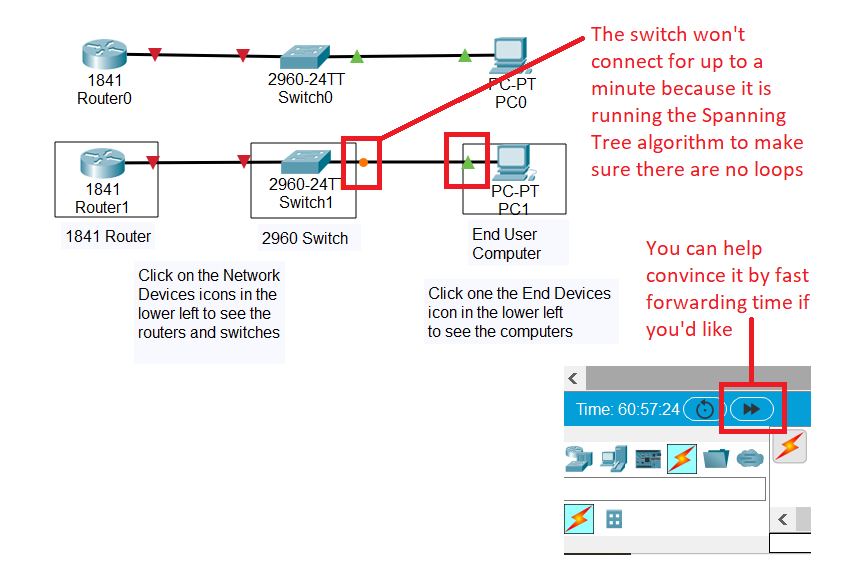
- The connections are now completed and we can configure them in the next lesson
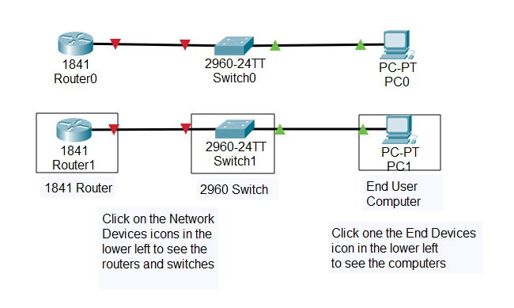
- It's important to save your work early and often. In real life you should save it on the devices, in Packet Tracer you should save it on your computer with the time and date so you can go back and check your old files if you need to
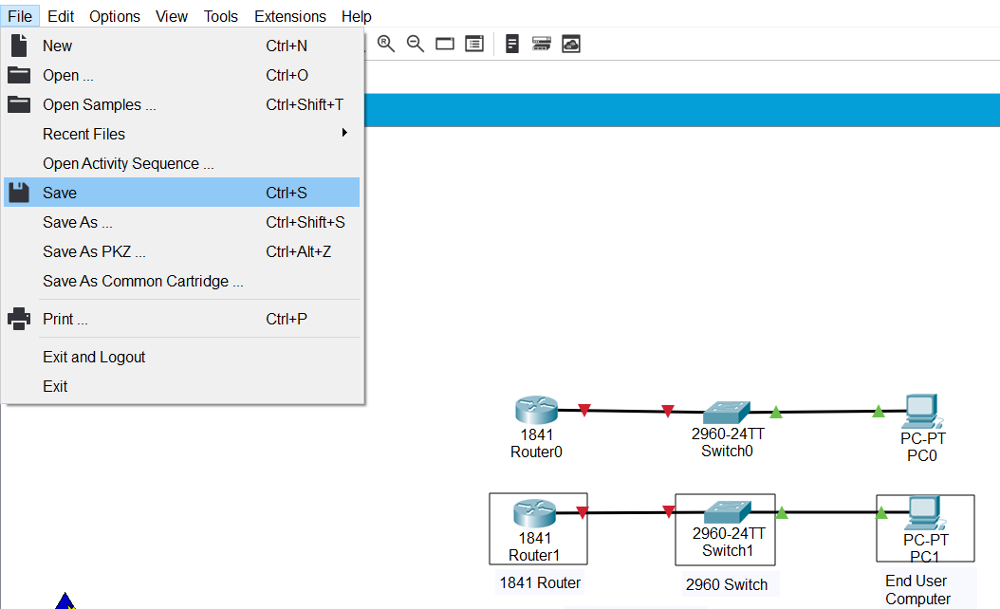
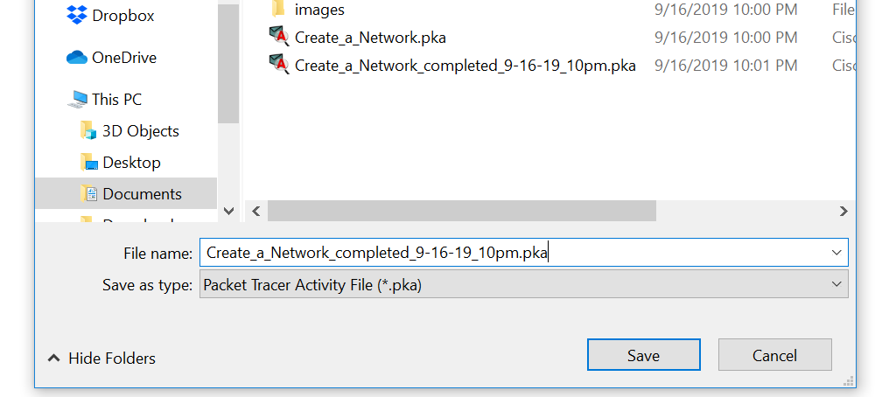